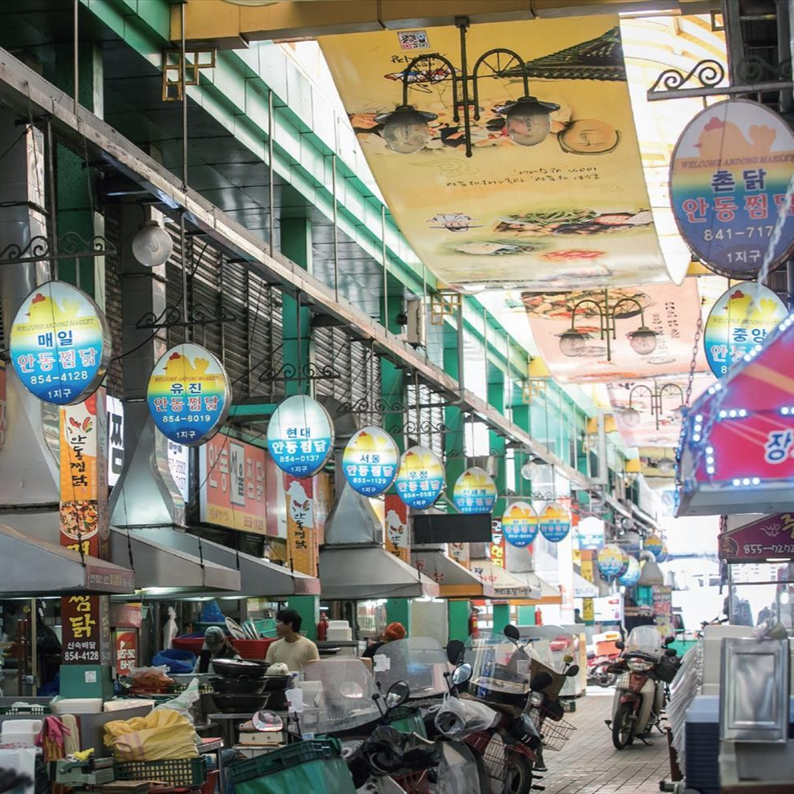
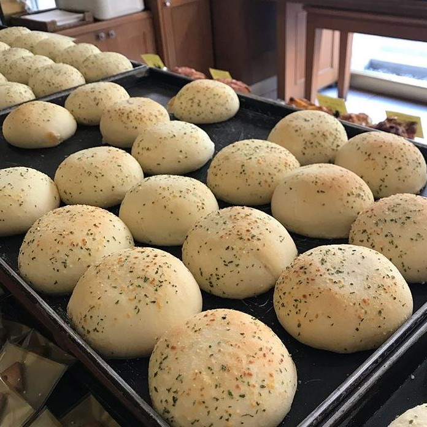
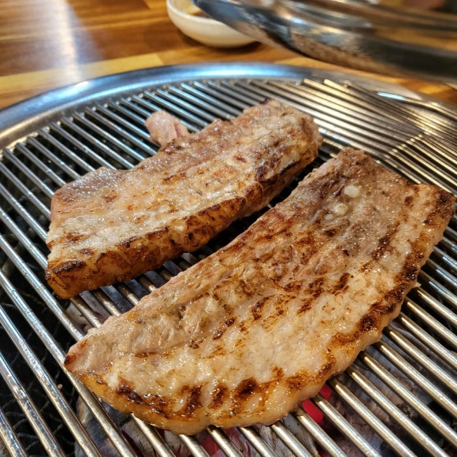
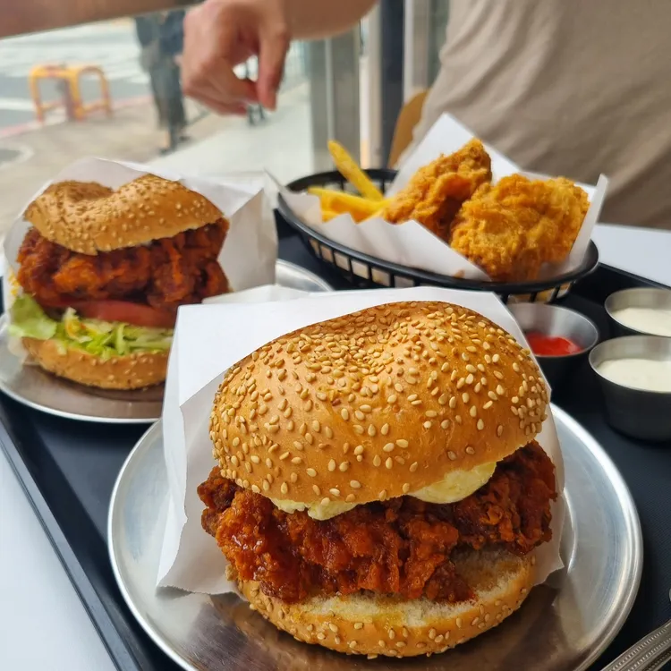
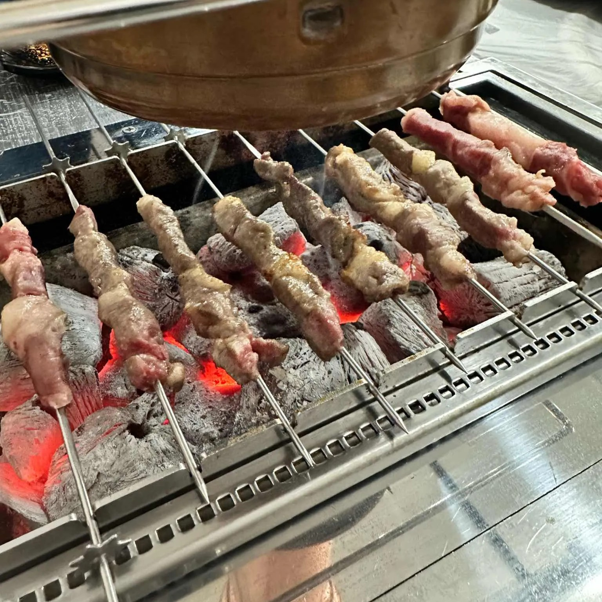
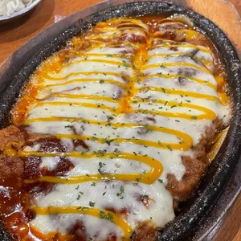
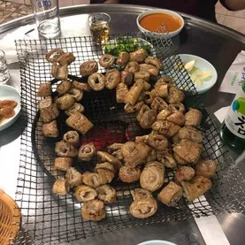

안동은 대한민국 경상북도 중북부에 있는 도시입니다.
맛있는 음식들이 정말 많습니다.
한국 정신문화의 수도 안동의 맛집을 소개합니다!
| 대표이미지 | 상호 | 구분 | 평점 | 위치 | 한줄평 |
|---|---|---|---|---|---|
|  | 안동찜닭골목 | 찜닭, 쪼림닭 | 평균4.48 | 안동시 서부동 185 | 골목 어느 식당에 들어가도 맛 보장. 순살과 납작당면은 없다. |
|  | 맘모스 베이커리 | 빵, 커피 | 4.0 | 안동시 문화광장길 34 | 크림치즈빵과 유자 파운드케이크가 유명하다. 주말에는 줄이 길어서 평일에 가는 것을 추천 |
|  | 제비원 삼겹 | 삼겹살, 된장국수 | 4.6 | 안동시 제비원로 493-10 | 나는 솔로에 나온 맛집. 인생 삼겹살, 고기가 입에서 살살 녹는다. 강강강강추 |
|  | 캔플라이치킨버거 | 버거, 수제버거 | 5.0 | 안동시 옥서3길 7-25 | 예쁜 가격의 인생버거, 네슈빌 치킨버거 전국 1등이라고 감히 말해본다. |
|  | 백화정맛집 | 양꼬치, 꿔바로우 | 5.0 | 안동시 옥서로 45 | 모든 요리가 하나하나 다 맛있고 특히 꿔바로우가 끝내준다. 칭따오 절대 못 참는 식당 |
|  | 진성식당 | 돈가스, 쫄면 | 4.3 | 안동시 태사길 25 | 사장님 늘 친절하시고 음식 양이 정말 많다. 점심때 가면 웨이팅이 있지만 회전이 빠른편. |
|  | 서울막창 | 막창, 돼지막창 | 4.8 | 안동시 번영1길 34 | 전혀 질기지 않고 쫄깃쫄깃 잡내 하나 없이 끝내준다. 찍어먹는 막장이 참 맛있다. |